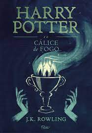
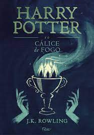

Resenha da Semana
Sinopse:Violet Markey tinha uma vida perfeita, mas todos os seus planos deixam de fazer sentido quando ela e a irmã sofrem um acidente de carro e apenas Violet sobrevive. Sentindo-se culpada pelo que aconteceu, a garota se afasta de todos e tenta descobrir como seguir em frente. Theodore Finch é o esquisito da escola, perseguido pelos valentões e chamado de "aberração" por onde passa. Para piorar, é obrigado a lidar com longos períodos de depressão, o pai violento e a apatia do resto da família.
Enquanto Violet conta os dias para o fim das aulas, quando poderá ir embora da cidadezinha onde mora, Finch pesquisa diferentes métodos de suicídio e imagina se conseguiria levar algum deles adiante. Em uma dessas tentativas, ele vai parar no alto da torre da escola e, para sua surpresa, encontra Violet, também prestes a pular.
Um ajuda o outro a sair dali, e essa dupla improvável se une para fazer um trabalho de geografia: conhecer lugares incríveis do estado onde moram. Ao lado de Finch, Violet para de contar os dias e finalmente passa a vivê-los. O garoto, por sua vez, encontra alguém com quem pode ser ele mesmo, e torce para que consiga se manter desperto.
"Me apaixonei por Violet e Finch antes mesmo de se apaixonarem um pelo outro. A jornada deles é adorável e inteligente e corajosa. Vai partir seu coração e relembrar o que significa estar vivo." — Jennifer E. Smith, autora de A probabilidade estatística do amor à primeira vista
Resenha:No começo do livro, tive a ideia de que seria mais um clichê, mas estava bem enganada sobre isso quando cheguei na metade do livro.
Nos primeiros capítulos achei o livro “parado” sem muita aventura, os dois se conhecem na escola, porém nunca pararam para conversar. Violet de começo me parecia uma garota sem graça, sem ter muito o que mostrar, já Theodore Finch me mostrou ser um garoto que passava por problemas, mas não conseguia falar sobre seus problemas.
o passar do livro fui vendo que a personagem principal não se passava daquela garota perfeita que tem muitos problemas, o livro traz muito isso também com Theodore um garoto que quer ser ele mesmo mas sofre na mão de outras pessoas. Observei que o livro fala bastante infelizmente de questões cotidiana, como o bullying, o luto, as diferenças das pessoas, depressão, transtorno de bipolaridade e suicídio.
Temos Finch por mais que tenha problemas pensa em ajudar Violet de como a vida vale a pena, mesmo nem ele crendo que a vida vale muito.
Violet tenta acabar com sua própria vida até ele conversar com ela mostrando o valor da vida.
Ao longo do livro os dois começam a fazer um trabalho de escola, geografia, onde deve conhecer o estado, Indiana, antes de irem para Universidade.
Theodore faz uma espécie de mapa onde os dois devem conhecer, nesse meio tempo eles se apaixonam nessas andanças por Indiana.
Violet começa a perceber que a causa da morte de sua irmã não foi sua culpa. Finch descobre que tem transtorno de bipolaridade porem se nega a acreditar nisso se isolando em seu quarto.
Sem querer acabar com final do livro, mesmo isso sendo uma resenha, quero deixar que a curiosidade desperte a vontade de vocês para


 
